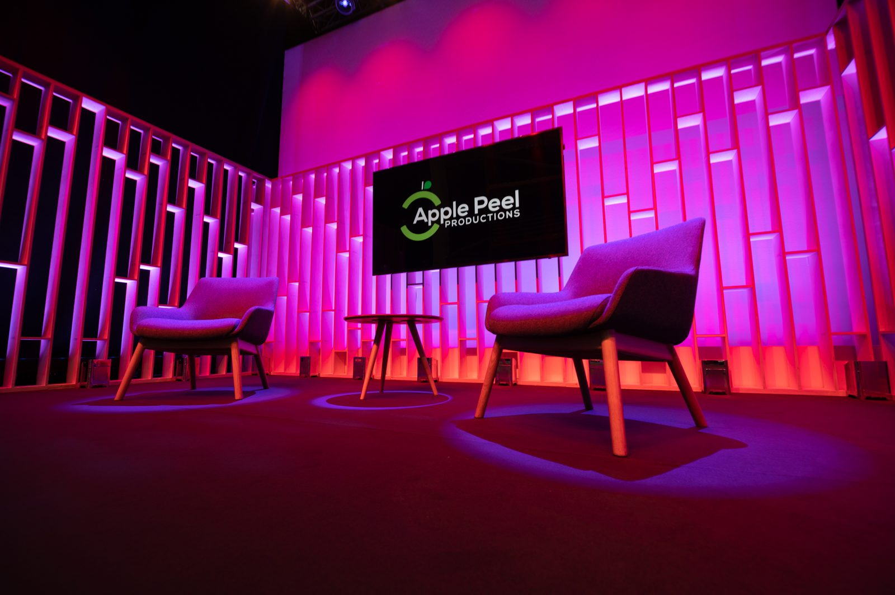

Awards shows live or die on pace. A ceremony that takes four minutes to get each winner on screen loses its audience by the third category. The production answer is preparation: nominee packages pre-produced, winner graphics built for every possible outcome, remote acceptance speeches tested in advance, and a host and gallery working from a run order timed to the second.
We produce awards for virtual audiences, hybrid audiences with a room and a stream, and fully live ceremonies with broadcast output. Studio hosting from our own space or a partner studio, or a full production in your venue — with the graphics, VT playback, remote links and comms that make a ceremony feel like a broadcast rather than a video call with trophies.

What a VSE awards show includes
Format & run order
Category order, timings, reveal mechanics and host scripts built into a second-accurate run order.
Nominee & sponsor VTs
Pre-produced packages to a house format, checked and loaded — the segments that can't be allowed to fail.
Graphics package
Category, nominee and winner graphics for every outcome, stings, sponsor idents and lower thirds in the brand.
Winner links
Remote winners tested and held in a green room, brought live for acceptance speeches with a fallback for every one.
Studio or venue production
Host studio with set and lighting, or full multi-camera production in your venue with stream output.
Highlights
Same-day winner clips for social, and a highlight reel within 48 hours.
Guides for this kind of event
How to write a run order the gallery can actually use
The single document that turns a nervous event into a calm one — and why most organisers write it wrong.
Graphics: the branding the camera can't see
Lower thirds, holding slides, stings and overlays — the graphics package that makes a stream look like a broadcast, and how to brief one.
Remote contribution: getting the guest into the gallery
Video calls, broadcast links and everything between — how remote speakers and remote venues arrive in a professional production, and which method suits which situation.
When it goes wrong live: the first sixty seconds
Something will break on air eventually. The difference between a blip and a disaster is what the crew does in the first minute — and whether they've rehearsed it.
Awards show questions
How do you keep a virtual awards show moving?
Every category is timed, nominee packages are pre-recorded, and winner graphics exist for every outcome. The host is on a prompter and the gallery calls the show from a run order — there are no gaps to fill.
Can winners accept remotely?
Yes. Shortlisted nominees are tested in advance and held in a virtual green room, so a winner is live on screen within seconds of the reveal.
What does an awards show production cost?
From around £5,000+VAT for a studio-hosted virtual ceremony to £15,000+ for a hybrid event with venue production and full graphics.
Can you play licensed music?
On your own platform, with the right licence, yes. For social simulcasts we recommend cleared library music to avoid takedowns.